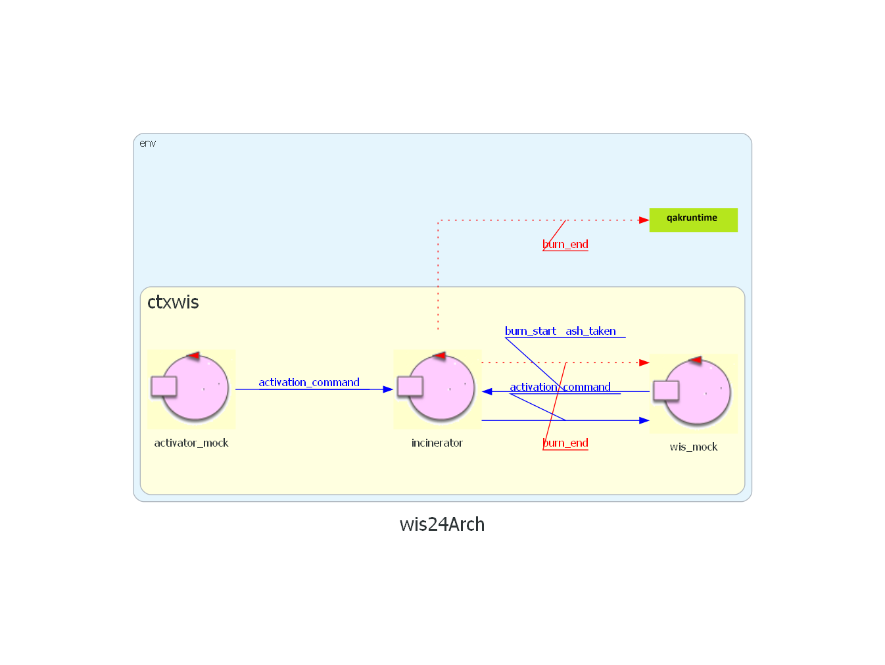
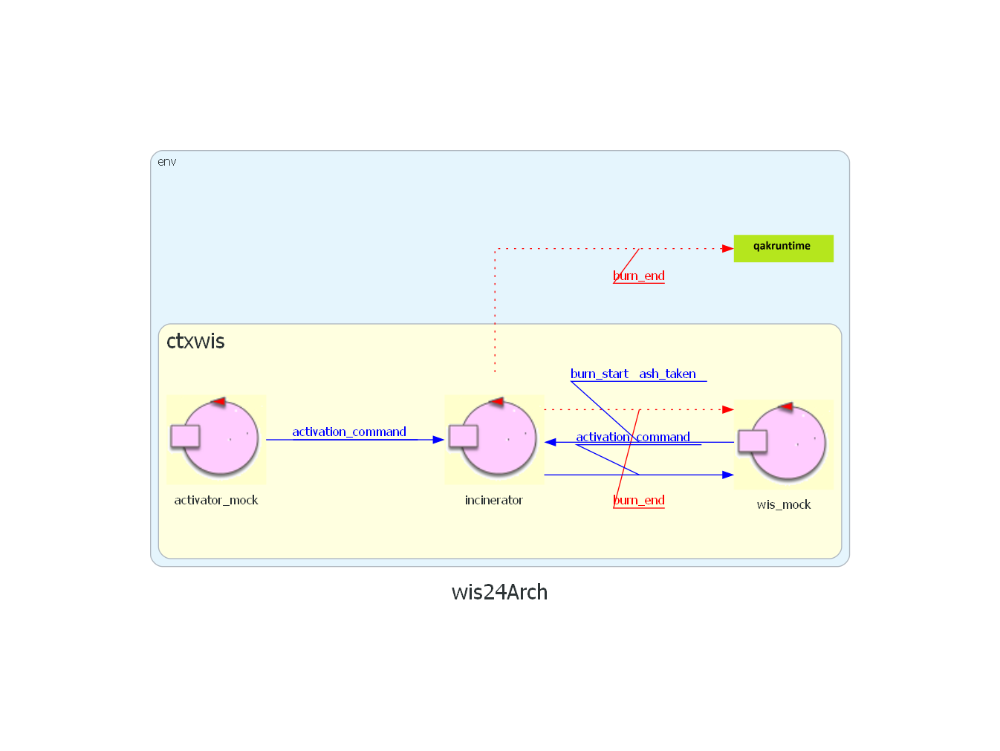
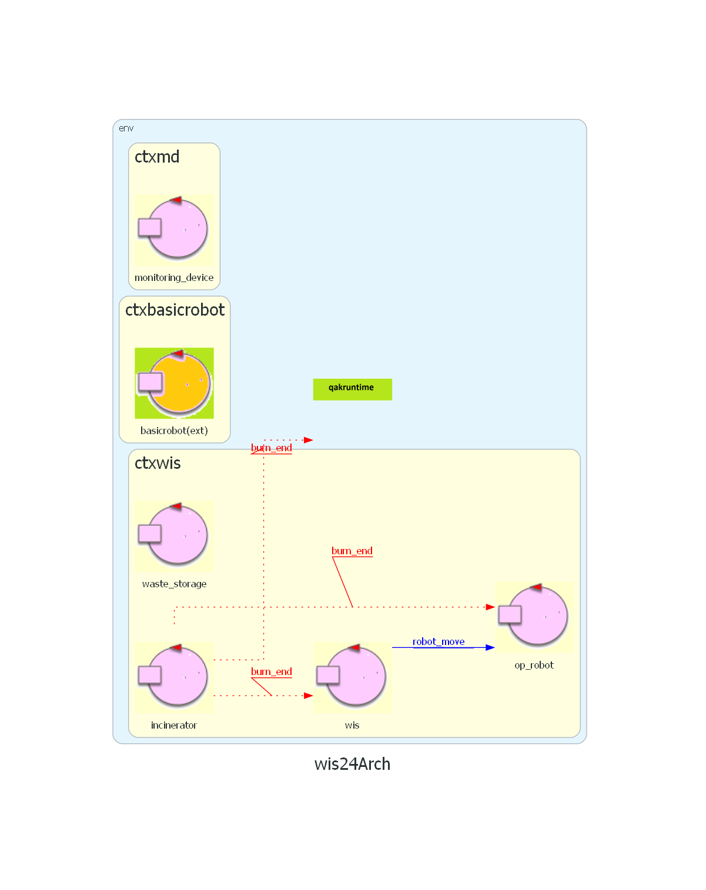
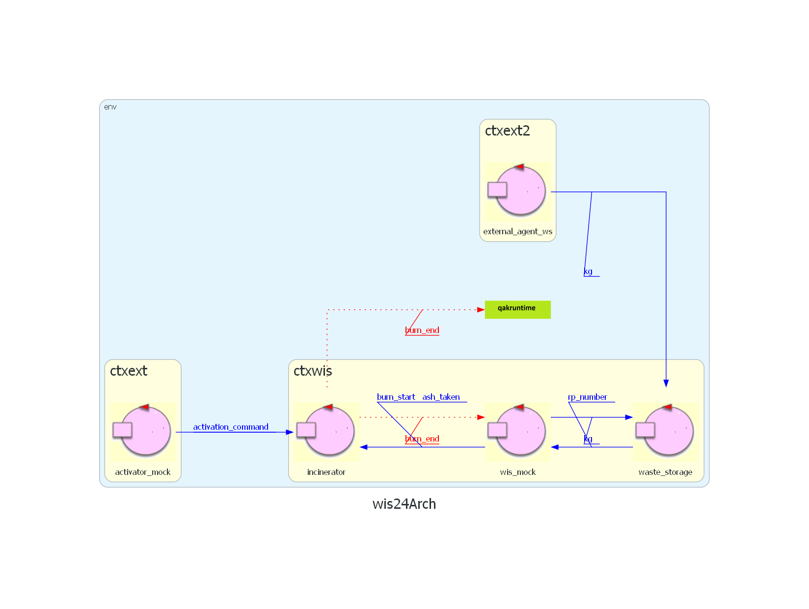

Introduction
SPRINT2: progettazione e sviluppo di WasteStorage e interfaccia a Scale (P'yeshchyk).
Nel precedente SPRINT siamo giunti a questo questa architettura iniziale di riferimento: 
Nel precedente SPRINT siamo giunti a questo questa architettura iniziale di riferimento: 
Requirements
Requirement analysis
WasteStorage
Container di RP, deve essere in grado di inviare informazioni riguardanti il suo stato a WIS.Per il sistema la parte fondamentale è la bilancia (fornita dal committente), ovvero una fonte di informazioni autonoma con cui WasteStorage deve interfacciarsi per rilevare il numero di RP presenti. Non è stato definito un metodo di comunicazione con Scale.
Dovendo mantenere costantemente traccia del numero di RP che contiene questo può venire modellato coome un attore.
Agenti esterni
Lo sviluppo degli agenti esterni per rifornire e svuotare la WasteStorage e AshStorage non sono dei requisiti:Modello dei requisiti
Problem analysis
GOAL: gestione degli RP in input al sistema
Per l'implementazione ci sono due possibilità:WIS richiede il numero di RP quando ne necessita
WasteStorage comunica a WIS ogni variazione di RP
Partendo dalla prima possibilità, nel caso di funzionamento generico del sistema, ogni volta che WIS ha bisogno di sapere il numero di RP lo puo chiedere a WasteStorage.
Nasce però un problema quando sono rilevati esattamente 0 RP, in questo caso o WIS fa polling oppure WasteStorage si rende osservabile dal coordinatore.
L'ultima opzione è migliore in quanto genera un traffico ridotto nella rete
Su quanto appena detto WasteStorage puo essere implementato come POJO o attore QAK.
L'implementazione tramite attore semplifica la realizzazione e la gestione delle comunicazioni.
Per la seconda possibilità, ogni volta che vengono immessi nel sistema RP o il robot ne toglie uno, WIS verrà aggiornato da WasteStorage. In questo modo non c'è piu il problema de 0 RP presenti, quindi è l'opzione migliore.
WasteStorage quindi è un attore e i messaggi sono modellati come:
La bilancia viene considerata come una fonte di informazioni autonoma. Non avendo però a disposizione una bilancia fisica, è necessario realizzarla. Data la sua semplicità puo essere una semplice variabile all'interno di WasteStorage.
Ma, dato che il focus principale del sistema sono gli RP, il peso è un informazione "momentanea". Quindi WasteStorage puo ricevere dall'agente esterno il peso e convertirlo direttamente in numero di RP, rendento la variabile peso superflua.
Ad esempio: se riceve 98Kg o 102Kg questi devono essere considerati come 2 RP.
In questo caso l'agente esterno viene sviluppato come mock per il corretto funzionamento del sistema.
WasteStorage
WIS è un attore che deve conoscere il numero di RP per decidere l'operatività del OpRobot e tenere aggiornato lo della GUI. Poiché il sistema dispone di una bilancia che rileva i Kg, ma non il numero esatto di RP, è necessario che i dati vengano interpretati e comunicati a WIS. Per il principio di responsabilità minima WasteStorage si occupa solo della gestione di RP e della comunicaazione del loro quantitativo a WIS. Deve inoltre ricevere da un agente esterno nuovi RP sotto forma di Kg.Per l'implementazione ci sono due possibilità:
Su quanto appena detto WasteStorage puo essere implementato come POJO o attore QAK.
L'implementazione tramite attore semplifica la realizzazione e la gestione delle comunicazioni.
Per la seconda possibilità, ogni volta che vengono immessi nel sistema RP o il robot ne toglie uno, WIS verrà aggiornato da WasteStorage. In questo modo non c'è piu il problema de 0 RP presenti, quindi è l'opzione migliore.
WasteStorage quindi è un attore e i messaggi sono modellati come:
Dispatch rp_number:rp_number(N)Dispatch kg:kg(N)Scale (mock)
Dispositivo per la rilevazione del peso dei RP comunicati a WasteStorage.La bilancia viene considerata come una fonte di informazioni autonoma. Non avendo però a disposizione una bilancia fisica, è necessario realizzarla. Data la sua semplicità puo essere una semplice variabile all'interno di WasteStorage.
Agente esterno
Per il funzionamento del sistema l'agente esterno porta dei RP in input e la bilancia dovrebbe rilevare un peso. Poichè la bilancia è simulata come variabile, l'agente esterno manda un messaggio direttamente a WasteStorage.Dispatch kg:kg(N)
Ma, dato che il focus principale del sistema sono gli RP, il peso è un informazione "momentanea". Quindi WasteStorage puo ricevere dall'agente esterno il peso e convertirlo direttamente in numero di RP, rendento la variabile peso superflua.
Ad esempio: se riceve 98Kg o 102Kg questi devono essere considerati come 2 RP.
In questo caso l'agente esterno viene sviluppato come mock per il corretto funzionamento del sistema.
Architettura logica
Test plans
Inserire nel sistema dal agente esterno 47Kg e verificare che WIS riceva l'informazione di 1 RP. Inserire altri 152 Kg e verificare che WIS percepisce in totale 4 RP.
Project
Progetto
Due attori principali:
external agent genera gli RP e li comunica sotto forma di Kg a waste_storage
waste_storage converte i Kg in RP e li comunica a WIS; quest'ultimo, quando comanderà il robot, per togliere 1 RP da waste_storage li manderà un messaggio di kg(-50) sfruttando così lo stato che già esiste per convertire i Kg in RP
Due attori principali:
Testing
il test descritto di sopra si trova qui.
Deployment
Maintenance
Prossimi sviluppi
Nel prossimo SPRINT si procederà ad analizzare e sviluppare Incinerator, in particolare la sua capacità di essere attivo, bruciare RP e comunicarlo ad altri.
By Marko P'yeshchyk, mat: 0001103132, email: marko.pyeshchyk@studio.unibo.it
And Arasi Stefano, mat: 0001103134, email: arasi.stefano@studio.unibo.it
GIT repo: https://github.com/Marko-Pyeshchyk/Waste-Incinerator-Service.git
And Arasi Stefano, mat: 0001103134, email: arasi.stefano@studio.unibo.it
GIT repo: https://github.com/Marko-Pyeshchyk/Waste-Incinerator-Service.git